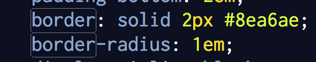

Margins, Borders, and Padding
What's the difference?
March 29th, 2015
When thinking about the layout of a website and it's elements, it is important to understand the concept and differences of Margins, Borders and Padding. To understand these terms, we must first recognize that every individual object on a page is represented as an element. The elements most often appear as paragraphs, headings, images, or links. HTML classifies these elements so that a web browser knows how to display them on a user's computer. Each element is surrounded by a box, whether it is visible or not. Between each box on the web page, there is likely a certain amount of white space. The white space is created with Borders, Margins, and Padding. Now imagine each element is surrounded by an imaginary box that is just big enough to hold it's contents. For a quick idea, here is an illustration of borders, padding, and margins from W3 Schools. I will dive into each.

Borders
Every element is surrounded by a border, even if it is invisible. A border can be useful to call out or block off certain text blocks. You are able to style a border with different sizes, line styles, and colors. See below how I used a border to surround my the content of the blog post. Creating this border is very simple and can be done in CSS. As mentioned before, you can control a number of variables of the border. As you can see here in my CSS file, I have specified that the border have a line weight of 2 pixels, have a specific color, and have rounded corners (border-radius). 
Padding
Now that we understand Borders, Padding is relatively straight forward. Padding is the space between the content and the border. In this blog post, there border that surrounds the post content. As you can see, the text in the blog post does not touch the border and there is white space between. The white space is created with padding. See the padding notation in the CSS.
Margins
Margins make up the white space on the outside of an element's border. It can create space between objects so that they do not stack up directly on top or to the side of one another.